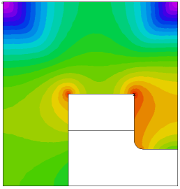

|
saturation |

  
|
|
saturation |
|
{ SATURATION.PDE
A NONLINEAR MAGNETOSTATIC PROBLEM
This example considers the problem of determining the magnetic vector
potential A in a cyclotron magnet.
The problem domain consists of
1) a ferromagnetic medium - the magnet core,
2) the surrounding air medium,
3) a current-carrying copper coil.
According to Maxwell's equations,
curl H = J (1)
div B = 0 (2)
with
B = mu*H
where B is the magnetic flux density
H is the magnetic field strength
J is the electric current density
and mu is the magnetic permeability of the material.
Maxwell's equations can be satisfied if we introduce a magnetic vector
potential A such that
B = curl A
therefore
curl( (curl A)/mu ) = J
This equation is usually supplemented with the Coulomb Gauge condition
div A = 0.
In most common 2D applications, magnet designers assume either
1) that the magnet is sufficiently long in the z direction or
2) that the magnet is axi-symmetric.
In the first instance the current is assumed to flow parallel to the z axis,
and in the latter it flows in the azimuthal direction. Under these conditions,
only the z or the azimuthal component of A is present. (Henceforth, we will
simply refer to this component as A).
In the Cartesian case, the magnetic induction B takes the simple form,
B = (dy(A), -dx(A), 0)
and the magnetic field is given by
H = (dy(A)/mu, -dx(A)/mu, 0).
We can integrate equation (1) over the problem domain using the curl analog
of the Divergence Theorem, giving
Integral(curl(H))dV = Integral(n x H)dS
where dS is a differential surface area on the bounding surface of any region,
and n is the outward surface normal unit vector.
Across interior boundaries between regions of different material properties,
FlexPDE assumes cancellation of the surface integrals from the two sides of the
boundary. This implies continuity of (n X H).
At exterior boundaries, the same theorem defines the natural boundary condition
to be the value of (n x H).
For the present example, let us define the permeability mu by the
expression
mu = 1 in the air and the coil
mu = mumax/(1+C*grad(A)^2) + mumin in the core
where C = 0.05 gives a behaviour similar to transformer steel.
We assume a symmetry plane along the X-axis, and impose the boundary value
A = 0 along the remaining sides.
The core consists of a "C"-shaped region enclosing a rectangular coil region.
The source J is zero everywhere except in the coil, where it is defined by
J = - (4*pi/10)*amps/area
Note:
This example uses scaled units. It is important for the user to validate
the dimensional consistency of his formulation.
}
Title "A MAGNETOSTATIC PROBLEM"
Select { Since the nonlinearity in this problem is driven by the GRADIENT of the system variable, we require a more accurate resolution of the solution: } errlim = 1e-4
Variables A
Definitions rmu = 1 rmu0 = 1 mu0core = 5000 mu1core = 200 mucore = mu0core/(1+0.05*grad(A)^2) + mu1core rmucore = 1/mucore S = 0 current = 2 y0 = 8
Initial Value { In nonlinear problems, a good starting value is sometimes essential for convergence } A = current*(400-(x-20)^2-(y-20)^2)
Equations A : curl(rmu*curl(A)) = S |
 |
Boundaries
Region 1 { The IRON core }
rmu = rmucore rmu0 = 1/mu0core
start(0,0)
natural(A) = 0 line to (40,0)
value(A) = 0 line to (40,40) to (0,40) to close
Region 2 { The AIR gap }
rmu = 1
start (15,0) line to (40,0) to (40,y0) to (32,y0)
arc (center=32,y0+2) to (30,y0+2)
{ short boundary segments force finer gridding: }
line to (30,19.5) to (30,20) to (29.5,20)
to (15.5,20) to (15,20) to close
Region 3 { The COIL }
S = current
rmu = 1
start (15,12) line to (30,12) to (30,20) to (15,20) to close
Monitors
contour(A)
Plots
grid(x,y)
vector(dy(A),-dx(A)) as "FLUX DENSITY B"
vector(dy(A)*rmu, -dx(A)*rmu) as "MAGNETIC FIELD H"
contour(A) as "Az MAGNETIC POTENTIAL"
surface(A) as "Az MAGNETIC POTENTIAL"
contour(rmu/rmu0) painted as "Saturation: mu0/mu"
End